The Crash Report
Every fatal crash in America, charted.
Data from NHTSA FARS 2014–2023 bulk CSV. Covers ALL occupant fatalities in vehicles involved in fatal crashes, all model years on the road. Estimated rates use sales-based fleet estimates × NHTS class-average annual miles—see Methodology for caveats.
| ☐ | # ▲▼ | Vehicle ▲▼ | Class ▲▼ | 5yr Deaths ▲▼ | Annual Avg ▲▼ | Est. Fleet ▲▼ | Est. Rate ▲▼ |
|---|
Impairment defined as BAC > 0 (alcohol) or specific drug detected in toxicology (drugs). Testing rates vary significantly by state and jurisdiction — actual impairment rates may be higher than reported. Models with 100+ drivers in fatal crashes shown.
| ☐ | # ▲▼ | Vehicle ▲▼ | Class ▲▼ | Drivers ▲▼ | Any % ▲▼ | Any # ▲▼ | Alc % ▲▼ | Alc # ▲▼ | Drug % ▲▼ | Drug # ▲▼ |
|---|
Shows total occupant deaths by vehicle model year across FARS 2014–2023 data. Older model years have more cumulative years of exposure on the road; this chart reflects fleet-age composition, not inherent vehicle safety differences. Select up to 5 vehicles to compare.
2024 data is an early NHTSA estimate subject to revision. Bars show total fatalities (left axis); line shows rate per 100M VMT (right axis).
Rates calculated from NHTSA FARS fatality counts and FHWA VM-1 vehicle miles traveled. Per-model VMT is not publicly available; these rates apply at the broad vehicle-class level only.

Ford Sells a Vehicle 43 Times Deadlier Than Another Ford
Within-make fatality rate spreads reach 43x. Brand loyalty is meaningless for safety. The choice within a brand dwarfs the choice between brands.

The Nissan NV200 Is the Only Vehicle Where Drugs Outrank Alcohol in Fatal Crashes
FARS toxicology data for 307 vehicle models reveals the drug-to-alcohol ratio varies by nearly 4x. Commercial delivery vans are drug-shifted. European luxury cars are alcohol-dominated.

Pontiac Stopped Making Cars in 2010. It Still Killed 3,038 People.
FARS data reveals defunct brands Pontiac, Mercury, Saturn, and Oldsmobile collectively killed 5,818 people between 2014 and 2023. More than BMW, Subaru, or Volkswagen.

Nearly 1 in 3 Pedestrians Killed in America Were Legally Drunk. We Keep Redesigning the Cars.
FARS data shows 30% of pedestrians killed in fatal crashes had a BAC at or above .08. Pedestrian intoxication is nearly double the driver intoxication rate. The safety industry focuses almost exclusively on vehicle design.

Non-Pedestrian Deaths Fell 10% in 23 Years. Pedestrian Deaths Rose 54%. The Fix Has Never Been on the Road.
A new FAU study finds that U.S. pedestrian deaths are driven by land-use decisions, not road design. At UK rates, 5,488 Americans killed each year walking to arterial-sited destinations would still be alive.

NHTSA Celebrates a 7.6% Decline in Fatality Rates. A Single Vehicle Swap Delivers 90%.
One trip to a Toyota dealership eliminates more fatal crash risk than 30 years of national safety progress at the current rate of improvement. We ran the math on four same-brand swaps.

FARS Says the Range Rover Sport Is Nearly the Safest Crash You Can Have. NHTSA Says Its Steering Can Snap Off.
The vehicle with the second-lowest lethality ratio in our 337-model FARS dataset is under federal investigation for catastrophic steering failure. 331,559 vehicles. 522 documented knuckle cracks. FARS can’t see any of them.

Traffic Deaths Fell 11% in Two Years. Truck Crash Injuries Rose 12%. That’s Not a Contradiction.
FARS data reveals the mechanism behind simultaneous declining deaths and rising injuries: the fleet shift toward SUVs and pickups is converting fatalities into injuries, not preventing crashes.

NHTSA Says Roads Are the Safest in a Decade. Your Car Might Disagree by 71x.
NHTSA's celebrated 1.10 fatality rate hides a 71-fold spread between the safest and deadliest vehicles on the road. The national average tells you nothing about your risk.

I Ranked Every Brand by Generational Safety Gains. Kia Finished Last.
FARS model-year data reveals 15 of 16 major automakers cut deaths between vehicle generations. Kia's nearly doubled. The explanation is more interesting than the headline.

Truck Drivers All Drink the Same. The Truck Decides Who Dies.
FARS toxicology data shows pickup truck impairment rates vary just 1.6x across all models. Death rates vary 37x. The vehicle is the variable, not the driver.

36,640 Dead Is Not Progress. It's a Floor.
NHTSA says 2025 road deaths hit a 6-year low. FARS data says the fleet got dramatically safer while the body count barely moved. Something is eating the engineering gains.

Your Airbag Might Be a Grenade. NHTSA Found 10 Dead Drivers to Prove It.
Counterfeit Chinese airbag inflators have killed 10 drivers in survivable crashes. FARS data reveals why the Malibu and Sonata were targeted.

More Than Half of Pickup Truck Deaths Come From Trucks Old Enough to Vote
FARS cross-tabulation reveals 54% of pickup truck fatalities come from pre-2005 models. Pickups stay on the road 47% longer than sedans, and they keep killing the entire time.

4.3 Million Cars Too Dangerous for Your Garage
NHTSA has told 4.3M+ vehicle owners to park outside due to fire risk. We cross-referenced them with a decade of crash fatality data. The road kills more than the garage.

IIHS Gave Out 63 Awards. The Vehicles Killing You Didn't Qualify.
SUVs captured 74.6% of 2026 IIHS safety awards. FARS data shows they have the lowest fatality rate. For the first time, ratings and reality converge.

The F-150 Was Present at 20,066 Fatal Crashes. Its Driver Walked Away from Most of Them.
No single nameplate appears in more fatal crashes than the Ford F-150. Its occupants die less than half the time. The asymmetry is the engineering working as intended.

45,540 Americans Died Because We Couldn’t Hold a Rate We Already Hit
NHTSA celebrates 2025’s “record low” traffic deaths. But since 2014, 45,540 excess fatalities have accumulated because the U.S. never maintained its own best safety rate of 1.08 deaths per 100M VMT.

America’s Biggest Safety Initiative Just Targeted the Wrong Variable
NHTSA’s Pathways to Safer Streets focuses on driver behavior, but FARS data shows impairment holds constant at ~20% across all vehicle models while death rates vary 284-fold. The initiative addresses the constant and ignores the variable.

Your Vehicle Class Doesn’t Predict Your Crash Survival. Your Model Does.
Within-class crash lethality variance is 2.25x between-class variance in FARS data. 42 sedans beat the worst SUVs. The badge on your tailgate is not a safety rating.

America’s Death Rate Is 1.10. The Cars Say It Should Be 0.75.
The 2025 fleet is radically safer than 2014’s. The death rate barely budged. Something is consuming the engineering dividend, and it fits in your pocket.

Opioid Deaths Dropped 26%. Traffic Deaths Dropped 6.7%. Nobody Connected Them.
CDC reports the largest overdose decline ever recorded. NHTSA reports the lowest traffic death rate in decades. FARS toxicology data suggests the two trends share a common variable nobody is talking about.

Every Car Under $20,000 Is Dead. The Replacements Are Deadlier.
Nine sub-$20K cars have been discontinued since 2020, leaving 3,213 FARS deaths in the rearview. Budget buyers now face older used vehicles with fatality rates 2-3× worse.

Every Luxury SUV on the Road Kills More People Outside It Than Inside It
The Audi Q7’s “weapon score” is 2.17: for every occupant who dies, 2.17 other people die instead. The Chevy Cavalier scores 0.17. That’s a 12.8× asymmetry.

The Honda Odyssey Has the Soberest Drivers in Its Class. It Crashes Twice as Often as the Sienna.
864 deaths. Lowest impairment rate among minivans at 15.4%. Yet the Odyssey crashes at 2.24× the rate of the Toyota Sienna, whose drivers are 23% more likely to be impaired.

The Dodge Grand Caravan Killed 1,782 Americans. It Was Supposed to Be the Safe Choice.
FARS data reveals a 7× death rate gap within the minivan category. The Grand Caravan posted 1.33 deaths per 100M VMT. Its replacement, the Chrysler Pacifica, posts 0.19.

Kia Is Statistically the Safest Brand in America. Nobody Noticed.
FARS data across a decade shows Kia’s brand-average fatality percentile is 11.2%. Toyota’s is 48.1%. The budget brand is the safety brand.

31 Cars Almost Never Kill Their Occupants. You Can Buy 28 of Them Today.
A cluster of 31 vehicles in the FARS database have near-zero occupant death rates. The engineering is solved. The information gap isn’t.

BMW’s Safest Car Beats Every Volvo. BMW’s Deadliest Is 30 Times Worse.
FARS data shows Volvo’s death rate spread across all models is just 2.6×. BMW’s is 30×. The safest brand isn’t about having the best car. It’s about never selling a dangerous one.

They Survived the Crash. The Door Handle Needed a User Manual.
At least 15 people have died in Tesla crashes where electronic door handles failed. The problem spans 13 automakers. Congress is trying to fix a door.

NHTSA Closed the Parking Lot Robot Investigation. It Escalated the Highway One.
159 parking lot bumps, zero deaths: case closed. 9 highway crashes, one death: investigation upgraded. FARS shows what FSD is actually up against.

225,000 Stellantis Vehicles Were Already Killing People. Now They Have Bombs in the Steering Wheel.
Stellantis says don’t drive these cars. FARS says 4,071 people in those exact model years are already dead. The airbag fix is free. 225,000 owners haven’t done it.

The Jeep Liberty’s Gas Tank Was Behind the Axle. Chrysler’s Fix Was a Trailer Hitch.
FARS records 801 deaths in the 2002–2007 Jeep Liberty. The fuel tank sat behind the rear axle with no shield. Chrysler refused a recall, then offered a trailer hitch as a crash barrier. Only 12% of owners ever got even that.

America’s DUI Body Count Belongs to the Walmart Parking Lot
The top five DUI-fatality vehicles in FARS are the Silverado, F-150, Accord, Camry, and Civic. Five appliances producing 4.6 impaired fatal crashes per day. None has an impairment rate above the class average.

The $14,730 Question: How Much Crash Survival Can You Actually Buy?
The Nissan Versa was America’s cheapest new car. FARS data shows its occupants die 72.3% of the time in fatal crashes. Budget subcompacts as a class run 71–75% lethality vs 39–56% for midsize vehicles.

You’re Already in a Fatal Crash. Here Are Your Odds.
FARS data reveals the conditional survival rate for vehicle occupants in fatal crashes varies from 8% to 80% depending on what you drive. A Ram 2500 occupant survives 79.5% of fatal crashes. A Saturn S Series occupant survives 7.6%.

Crash Frequency Explains 3% of Whether You’ll Die
Pearson r = 0.18 across 272 FARS vehicle models. How often a car crashes and how often it kills are nearly independent dimensions. Traditional death rates conflate two unrelated risks.

A Single Number Exposes America’s Most Lethal Used Cars
Multiplying crash frequency by lethality produces a composite Danger Score. The Chevy S-10 scores 652. The Tesla Model 3 scores 6. A 100-to-1 spread nobody publishes.

America’s Death Rate Hit a Historic Low. The Cars Doing the Killing Didn’t Get the Memo.
1.01 deaths per 100M VMT. Historic low. Except 90 models still kill above that rate and produce 69% of all fatalities. The average is a fleet-composition illusion.

ESC Saved Truck Drivers. It Barely Dented the SUV Body Count.
Electronic stability control cut pickup deaths 43% and van deaths 44%. SUVs? Down 5.5%. Sports cars got 8% worse. Fleet growth ate the safety dividend.

The Mini Cooper Has Go-Kart Handling. It Also Has Go-Kart Crumple Zones.
FARS data shows the Mini Cooper has a per-crash lethality of 0.653, higher than every crossover SUV in the database. Its drivers are among the soberest in fatal crashes. The problem is 2,700 pounds of physics.

The Ford Fiesta Survived Crashes Better Than the Average SUV. Nobody Noticed.
A 2,500-pound subcompact posted per-crash lethality of 0.473, lower than the average SUV at 0.516. Engineering beats mass.

Three Agencies Can’t Agree on What the Kia Soul Is. FARS Data Settles It.
NHTSA calls it an SUV. IIHS calls it a small car. FARS classifies it as a sedan. Per-crash lethality of 0.643 is within 0.002 of the sedan class average and 22.7% worse than real SUVs.

For Every Death on American Roads, 62 People Are Injured. That Ratio Is Climbing.
NHTSA’s 2024 data shows 39,254 killed and 2.42 million injured. Deaths dropped 6.7% in 2025. Injuries didn’t. The gap reveals America is surviving crashes better, not avoiding them.

Same Brand, Same Price, 10x the Death Rate
FARS data exposes a brutal gap between sedans and crossovers from the same manufacturer. The Toyota Camry’s death rate is 968% higher than the RAV4’s. Every sedan lost.

Your Car’s Safety Rating Is Hiding a Second Number
Nissan Kicks, Honda Fit, and Hyundai Accent post low fatality rates per VMT. But when they crash fatally, their occupants die over 70% of the time. The rate flatters them. The physics don’t.

Same Price, Same Stars, Different Odds of Walking Away
FARS lethality rankings reveal 16–29% survival gaps between direct competitors with identical IIHS ratings. The Honda Accord is the deadliest midsize sedan. The VW Jetta is the safest compact.

Minivans Are Exactly As Safe As SUVs and America Chose the Expensive One
FARS class averages: vans 0.626, SUVs 0.630 deaths per 100M VMT. The Chrysler Pacifica matches the RAV4. The Sienna beats the Explorer. The safety argument for ditching minivans doesn’t exist.

Zero Out of Five: The Back Seat of America’s Best-Selling Small Cars Is a Death Trap
IIHS tested five small cars with a rear-seat dummy for the first time. All five failed. Honda Civic, Toyota Corolla, Nissan Sentra, Kia Forte, Subaru Crosstrek. 14,069 combined deaths in FARS.

36,640: America's Record Low Is a Retirement Party, Not a Revolution
NHTSA's record-low traffic deaths in 2025 are real. But FARS data suggests the improvement is driven by fleet attrition of the deadliest vehicle generation, not a behavioral breakthrough.

29% of the Fleet Produces 63% of the Deaths
A fleet-weighted FARS analysis reveals that less than a third of America's registered vehicles produce nearly two-thirds of all traffic fatalities.

Hyundai Wins Every Safety Award. FARS Says It Barely Matters.
A brand-level FARS analysis reveals Hyundai cut model-year fatalities just 6% while Ford and Chevy dropped 76%. Awards and actual deaths tell different stories.

12 Million Recalls Didn't Save Anyone. Buying SUVs Did.
Traffic deaths fell 6.7% in 2025. FARS data reveals the real driver: Americans accidentally replaced high-lethality sedans with lower-lethality SUVs. Recalls had nothing to do with it.

Honda Cut Fatal Crashes in Half. Hyundai Tripled Theirs.
FARS model-year data across 62 vehicles reveals a hidden safety improvement gap: most automakers cut fatal crash deaths 50-90% between 2000s and 2010s models. Hyundai and Nissan went the other way.

Ford Issued 153 Recalls in One Year. None of Them Fixed What Actually Kills People.
Ford set the all-time recall record in 2025. Cross-referencing those 153 recalls with FARS fatality data reveals zero overlap between what Ford is fixing and what is killing Ford drivers.

1.9 Million Vehicles Just Lost the Safety Feature That Saves 78% of Backover Victims
Ford and Toyota recalled nearly 1.9 million SUVs with defective rearview cameras in March 2026. NHTSA data shows only 25% of recalled vehicles ever get fixed, leaving an estimated 1.4 million drivers blind in reverse.

America’s Most Dangerous Vehicles Aren’t Its Deadliest. Only 5 of 15 Overlap.
Only 5 of 15 vehicles appear on both the highest death rate and highest body count lists. FARS data reveals a 147-rank divergence between personal risk and population-level harm.

America’s Best-Selling Sedans Are Its Deadliest. Its Best-Selling SUVs Are Its Safest.
The Camry, Civic, and Corolla kill at 2.2x the rate of niche sedans. The RAV4, CR-V, and Equinox are 8x safer than niche SUVs. Same word — “bestseller” — opposite body counts.

At 4,000 Pounds, Your Vehicle Stops Getting Safer. It Just Gets Deadlier.
A 2025 IIHS study found that vehicle weight stops protecting drivers above 4,000 lbs. FARS data confirms: the Ram 2500 survives 80% of its fatal crashes. The person in the other car doesn’t.

One Redesign Erased 84% of a Car’s Deaths. Most Recalls Don’t Come Close.
The 2020 Sentra redesign cut model-year deaths from 173 to 30. FARS data shows platform redesigns routinely save more lives than defect recalls.

Your Car Has a Kill Curve. Sports Cars Peak at 5. Everything Else at 14.
FARS model-year data reveals class-specific death curves: sports cars kill at age 5, while sedans, SUVs, pickups, and vans all peak at 14–16. Deaths double between ages 10 and 14.

The Honda CR-V Killed 2,072 People. You Still Think It’s Safe.
FARS data reveals the CR-V has the 3rd worst death rate among compact SUVs at 0.53 per 100M VMT. An estimated 1,324 excess deaths compared to the RAV4. Its drivers are the most sober in class.

America’s Safest Minivan Just Got Recalled for the One Thing Keeping It Safe
The Chrysler Pacifica is 7x safer than the Grand Caravan it replaced. Now 178,000 of them have defective side curtain airbags. FARS data quantifies the stakes.

A Mazda CX-5 Kills 15 Owners Per Million Per Year. A Chevy S-10 Kills 652.
NHTSA measures vehicle safety per mile driven. That metric is hiding the actual risk to you. A new owner-risk calculation reveals a 43x gap between the safest and deadliest vehicles on American roads.

Every Vehicle Class Drinks at the Same Rate. Only One Class Walks Away.
FARS toxicology data shows impairment rates across all five vehicle classes cluster within 4.4 percentage points. Lethality diverges by 19.3 points. The driver behavior is constant. The engineering is not.

Every Automaker in America Is Suing to Kill a Rule That Would Save 360 Lives a Year
The Alliance for Automotive Innovation filed suit to repeal NHTSA's AEB mandate. IIHS data: AEB cuts rear-end crashes 50%. Each year of delay costs roughly 360 lives.

The Sporty Version of Your Car Is Up to 5.7x More Likely to Kill You
Hyundai Elantra: 1.50 deaths per 100M VMT. Its sporty sibling, the Veloster: 8.54. Four brands, four body bags, one engineering pattern.

Your Rental Company's Default Option Is 4.6x Deadlier Than the Upgrade
The economy sedan at the rental counter kills at 2.31 per 100M VMT. The compact SUV upgrade: 0.50. That $12/day difference is a survival calculation.

Body-on-Frame SUVs Are Up to 12x Deadlier Than Unibody Crossovers From the Same Brand
The Chevy Tahoe kills at 2.49 per 100M VMT. The Traverse manages 0.20. Same dealer, same logo, 12.5x the body count.

The Ford E-350 Is 18 Times Deadlier Than the Van Ford Built to Replace It
776 dead. Rate of 2.51 per 100M VMT. Its successor, the Transit, sits at 0.14. And 84% of the drivers were sober.

The 2013 Elantra Killed More People Per Unit Than Any Civic Ever Made
338 dead from a single model year. 1.37 deaths per 1,000 sold. The airbag let the dummy’s head slide off in small overlap testing.

629,000 Palisades Got Recalled. The Cars Actually Killing You Didn’t.
NHTSA mobilized for a vehicle with 38 deaths. Meanwhile, 24 common models with 63,563 combined deaths got nothing. The recall system has a 33%-of-all-deaths blind spot.

Your Brand’s Body Count Has an Expiration Date
The average Mercury in a fatal crash is 16.3 years old. The average Kia is 5.6. That 10.7-year gap reveals more about brand safety than any star rating.

Toyota’s Immortal Truck Has a Mortality Problem
71% of Tacoma fatal crash victims were in pre-2010 models. The truck that never dies mechanically is killing people because it stays on the road decades past its safety expiration date.

Nissan’s Subprime Death Pipeline
FARS data shows Nissan sedans kill at 4x the rate of Nissan SUVs, with identical impairment profiles. NMAC’s subprime lending funnels buyers into the deadlier half of the lineup.

Same Price, Different Coffin: The Death Rate Lottery Hiding in Your Car Payment
FARS data reveals 4-8x death rate spreads between vehicles at the same price point. Your sticker price tells you nothing about your chances of survival.

The Fleet Retirement Dividend: America’s Deadliest Vehicle Generation Is Finally Dying
Vehicles built between 2000 and 2006 are responsible for 69,625 FARS deaths. At 4.5% annual scrappage, the deadliest cohort in American history is finally aging off the road.

The Recession Saved 7,500 Lives and Nobody Noticed
Cross-tabulating FARS model-year deaths with US auto sales reveals the 2008 crash created a “ghost fleet” of never-sold vehicles that prevented thousands of fatal crash appearances.

The Truck That Isn’t a Truck Has the Lowest Death Rate of Any Midsize Pickup
The Honda Ridgeline kills at 0.24 per 100M VMT. The Ford Ranger: 2.91. A 12x spread within a single vehicle class, explained by unibody vs body-on-frame construction.

Hyundai’s Breakout Hit Produced the Largest Death Spike of Any Modern Midsize Sedan
FARS data reveals the 2011 Sonata YF caused a 238% model-year death spike. Sales doubled. So did the per-unit fatality rate.

The Brands With America’s Drunkest Drivers Are the Expensive Ones
FARS toxicology across 490K drivers: Infiniti tops impairment at 24.4%. Toyota sits at 19.1%. Within-brand model spread dwarfs the gap between brands.

Drunk or Sober, the Car Doesn’t Care
Within a vehicle class, impairment rates have zero correlation with crash lethality. Simpson’s Paradox strikes again: the steel determines who survives, not the BAC.

The Biggest Sedans in America Are Also the Deadliest. It’s Not a Coincidence.
Retiree sedans average 74.2% lethality in FARS data. Modern crossovers average 53%. Mass doesn’t save you when your bones are the crumple zone.

The Death Concentration Index: Chronic Killers vs. One Bad Generation
Borrowing the Herfindahl-Hirschman Index from antitrust law and applying it to FARS data reveals which vehicles kill uniformly across every generation and which had one catastrophic design era.

The Deadliest Vintage: How Six Model Years Killed 59,284 Americans
Model years 2000–2005 account for one-third of all fatal crash deaths from 2014 to 2023. The peak vintage — 2005 — killed 11,363 people. FARS data reveals a death mountain shaped by weak safety mandates, high production volume, and demographic filtering.

Drunk Driver Armor: The Vehicles That Let Impaired Drivers Walk Away While Their Victims Don’t
A novel FARS cross-tabulation multiplies vehicle protection ratio by impairment rate to reveal which vehicles most effectively shield drunk drivers from the consequences of their own crashes.

Impairment Doesn’t Explain Your Car’s Death Rate. We Did the Math.
Cross-tabulating 307 vehicle models reveals a flat 20% impairment constant across all classes. The 200x gap in death rates is almost entirely a vehicle engineering story.

Your “SUV” Protects You Like a Sedan. FARS Data Exposes the Crossover Lethality Gap.
Nissan Kicks occupants die in 73.9% of fatal crashes. Audi Q5 occupants: 32.2%. Both are classified as SUVs. A 2.3x lethality spread within a single vehicle class.

24 Vehicle Models Kill Half of America. The Other 313 Split the Rest.
Only 7% of vehicle models account for 50% of all FARS traffic deaths. Two completely different top-10 lists. Almost zero overlap. No silver bullet.

America’s Favorite Vehicle Class Has a 14x Death Rate Spread. Nobody Tells You Which End You’re On.
Mazda CX-5: 0.12 deaths per 100M VMT. Jeep Cherokee: 1.73. Same class. Impairment rates nearly identical. FARS data on 13 compact SUVs reveals the choice nobody talks about.

The Pickup Inversion: How Truck Size Determines Who Dies
Compact pickups kill their own drivers at 69% rates. Heavy-duty trucks export 66% of fatalities to other road users. The crossover happens at 5,500 pounds.

The Safety Half-Life: Which Vehicles Are Still Killing People in Their Newest Form?
A novel FARS metric reveals which vehicles concentrated their fatalities in old models and which are still deadly in recent form.

1 in 5 Impaired Fatal Crash Drivers Were on Alcohol AND Drugs
Decomposing FARS toxicology into alcohol-only, drug-only, and poly-impaired by vehicle model reveals a pattern BMW M5 and Buick Park Avenue share.

The Honda Accord Is the Deadliest Midsize Sedan in America
FARS data reveals a 5.3× death rate gap between America’s safest and deadliest midsize sedans. The answer isn’t driver behavior.

The Traverse Has a 0.20 Death Rate. IIHS Says It’s Not Safe Enough.
IIHS stripped safety awards from vehicles with some of America’s lowest death rates while handing them to cars with rates 7.5× worse.

The RAV4 Has a 0.19 Death Rate. The Corolla It Replaced? 1.85.
The Toyota RAV4 is 9.7 times safer per mile than the Corolla. Across 15 sedan-to-crossover pairs, the migration away from sedans may be saving 1,500 lives a year.

One in Five Cars on U.S. Roads Has an Unfixed Recall. The Fix Costs $0.
58.1 million vehicles have at least one open recall. 14 million have two or more. The repair is free. The completion rate for cars over 10 years old is 15%.

77% of New Cars Can Detect Motorcycles. The Other 270 Million Vehicles Can’t.
IIHS now tests AEB against motorcycle targets. Most new cars pass. But the average vehicle on the road is 12.6 years old and has no motorcycle detection at all. 6,335 riders died last year.

FARS Says 9% of Fatal Crashes Involve Drugs. The Real Number Is Closer to 55%.
A peer-reviewed study of 138,505 fatally injured drivers found 55% tested positive for nonalcohol drugs. FARS per-vehicle data shows 8.7%. Three systemic failures explain the 6x undercount.

A $22,000 Kia Sedan Protects Your Kids Better Than Any Minivan on Sale
Zero out of four minivans earned an IIHS safety award in 2026. The Honda Odyssey scored Poor for rear-seat protection. A Kia K4 starting at $22,290 got Top Safety Pick+. Your family hauler is a front-seat safety pod.
A 16-Year-Old Pays 376% More for Car Insurance. The Crash Data Says They Should Pay 193%.
Teen drivers crash at 3x the rate per mile. Insurers charge 4.8x more. We ran the overcharge calculation, found 7 ways to cut premiums 20-50%, and discovered Hawaii banned age-based rating and nothing broke.

Your Safety Vest Makes You Invisible to the Car That’s Supposed to Save You
IIHS tested pedestrian AEB on three vehicles. Two couldn’t detect a dummy wearing reflective safety strips—0 mph braking, 100% hit rate. The federal government mandates both the clothing and the technology. They cancel each other out.

Your Garage Door Is Better Regulated Than Your Car Seat
A 2-year-old was crushed by a Hyundai Palisade power seat. Power windows killed children for 35 years before automakers added an $8 fix. Your garage door has had mandatory anti-crush protection since 1993. Your car seat still doesn’t.

FSD Is Trying to Replace the Safest Drivers in America
NHTSA is investigating 3.2 million Teslas for FSD failures. FARS data shows Tesla drivers already have the lowest crash rate of any vehicle in the dataset. The paradox: FSD may be making America’s safest fleet less safe.

39,345 Dead. NHTSA Calls It Progress.
NHTSA’s 2024 preliminary data shows fatalities dropped below 40,000 for the first time since 2020. Our FARS decomposition reveals 72% of deaths come from pre-2012 vehicles simply aging off the road. Progress by attrition.

Vehicle Class Explains 2% of Death Rate Variation. The Other 98% Is the Model You Picked.
FARS data on 285 vehicles reveals within-class death rate spreads of 94x to 256x. The between-class difference? Just 2.1x. Buying an SUV ‘for safety’ is statistical noise.

Some Cars Kill You Before Their First Oil Change
Most fatal vehicles in FARS are 12–18 years old. A handful kill disproportionately within 1–5 years of manufacture. Three failure modes explain why new cars come with their own category of lethality.

Your Car’s Death Rate Is Hiding Two Completely Different Failures
Some vehicles crash constantly but protect you. Others almost never crash—but when they do, you die. FARS data reveals a two-axis safety map that the single death-rate number was designed to obscure.

One Corporation, 51,687 Deaths: GM’s Multi-Brand Body Count
Chevrolet, GMC, Buick, Pontiac, Cadillac, Saturn, Oldsmobile. Seven brands, one parent company, 27% of all FARS fatalities. Brand-level data splits the deaths across seven ledgers. Stack them and the concentration is staggering.

The Toyota Solara Has the Soberest Drivers in FARS — and a Death Rate 4x the Fleet Average
A z-score gap analysis of 200 vehicles separates cars that kill through engineering failure from those that kill through driver behavior. The Solara’s 4.1% impairment rate is the lowest in the dataset. Its death rate tells a different story.

Every Car Has the Same Drunk Drivers — So Why Do Death Rates Vary 285x?
Impairment rates hold steady at ~20% across 200 vehicle models. Death rates swing from 0.03 to 8.54 per 100M VMT. R² = 0.038. The vehicle is the variable, not the driver.

33 Vehicles Hit the Same Death-Rate Cliff Between 2018 and 2021
FARS model-year data reveals a synchronized 64% fatality collapse across sedans, SUVs, pickups, and muscle cars. The cause wasn’t a single recall. It was a quiet revolution.

Your Favorite Brand Doesn’t Care if You Live
Within-brand variance in fatality rates is 5.9× higher than between-brand variance. FARS data proves the badge means nothing.

The Mazda CX-5 Is the Safest Compact SUV You’re Not Buying
With a 0.12 fatality rate per 100M VMT, the CX-5 is 3-8x safer than the CR-V, Escape, and Equinox — and its drivers are actually more impaired, not less.

The Honda Accord Owes America 4,858 Lives
If every vehicle killed at the same rate relative to its fleet size, the Honda Accord should have 2,244 deaths in FARS. It has 7,102. A fleet-share analysis reveals which vehicles produce excess deaths.

A $30 Part Was Missing From 9 Million Cars. FARS Data Shows the Fallout.
Hyundai and Kia skipped engine immobilizers on millions of vehicles. Then TikTok taught teenagers to steal them. The FARS model-year data traces the body count.

The Average Car That Kills You Is 12.5 Years Old
Cross-tabulating 187,000 FARS fatalities by model year reveals the killing fleet isn't junkers or new cars. It's the enormous middle-aged bulk of America's 12-year-old vehicles.

These Cars Got Deadlier as They Got Newer
Eight models defied the safety curve — their 2016-2022 versions killed 67% to 144% more people than their predecessors. We cross-tabulated all 337 FARS models to find the ones moving backward.

Some Brands Are Safe Bets. Others Are Russian Roulette.
Chevrolet's death rate spread: 39×. Subaru's entire lineup stays below 1.0. We calculated the within-brand standard deviation for every major manufacturer. Brand loyalty is not a safety strategy.

The Convertible Rollover Gap: Which Open-Top Cars Actually Protect You, and Which Ones Just Look Like They Do
Fixed steel hoops vs. pyrotechnic pop-up bars vs. reinforced A-pillars. We compared rollover protection across nine popular convertibles. Track day organizations already know the answer.
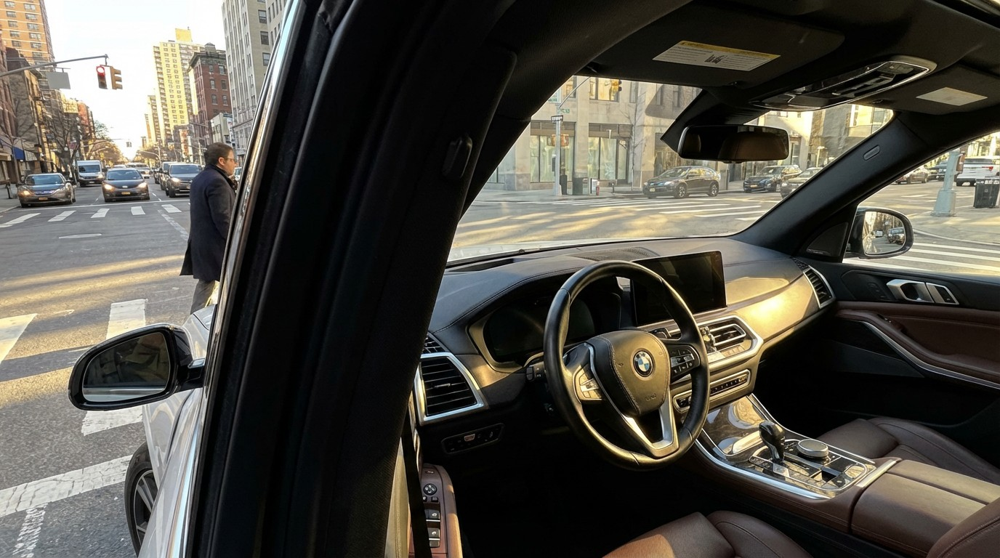
Your Car Was Designed to Save You in a Rollover. Not to See the Person in the Crosswalk.
IIHS measured blind zones in 168 vehicles. A large A-pillar blind zone raises left-turn pedestrian crash risk by 70%. A 4’11” driver faces 33% vision blockage. The pillars that save occupants hide pedestrians.
919,000 Crashes. 2,872 Dead. Nobody Stayed.
Hit-and-run crashes hit a record 15% of all police-reported crashes in 2023. One in four pedestrians killed was left on the road. The poorest ZIP codes absorb six times the deaths.
One in Three Dead Motorcyclists Weren’t Licensed to Ride. The System Doesn’t Care.
35% of motorcyclists killed in 2023 had no valid license. The rate spiked during COVID and never came back down. The licensing system isn’t a safety mechanism. It’s a fee.
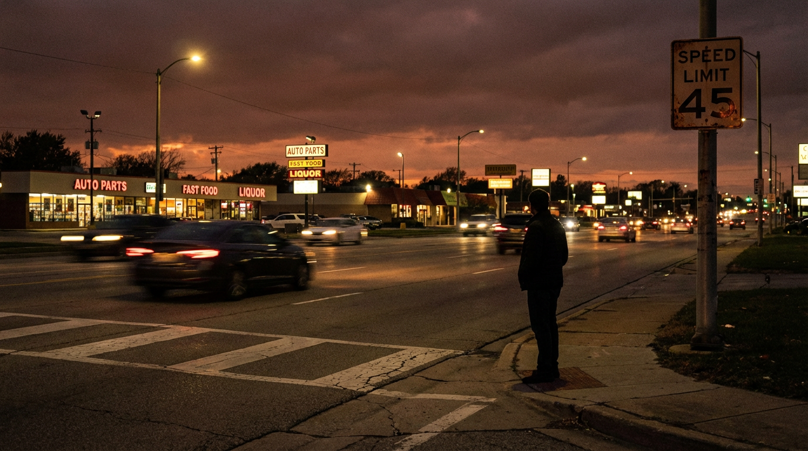
The Deadliest Speed Limit in America Is 45 MPH. It’s Posted on Every Suburban Boulevard You Drive.
45 mph is where a pedestrian’s chance of dying crosses 50%. It’s also the most common speed limit where drivers kill pedestrians. Three independent datasets converge on the same number.
25% of Driving Happens at Night. 50% of the Dying Does Too.
A Cochrane meta-analysis of 17 studies found street lighting reduces fatal crashes by 66%. America has millions of miles of unlit road. Three multipliers—visibility deficit, behavioral overlay, and infrastructure absence—compound against every nighttime driver.
42% of Drivers Killed in Crashes Had THC in Their Blood. America Has No Idea What to Do About It.
America counts alcohol-impaired driving deaths with confidence. For cannabis, it can’t even agree on what “impaired” means. Three systemic failures explain the void.
20% of Americans Live in Rural Areas. 41% of Traffic Deaths Happen There.
Per-capita rural traffic death rate: 2.8x urban. Three independent clocks compound against every crash victim: speed severity, 28-minute longer EMS response, and 182 closed hospitals since 2010.
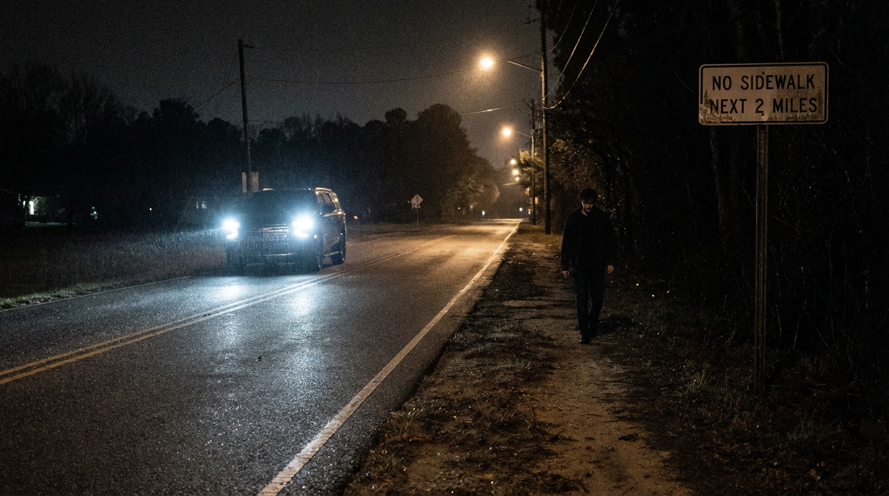
7,314 Pedestrians Died in 2023. America’s Roads Were Designed to Kill Them.
76% die in the dark. 65% where no sidewalk exists. 54% involve SUVs or pickups. When all three converge, survival drops below 15%. The safety tech designed to help doesn’t work at night.
The Motorcycle Safety Scissors: How 50 Years of Car Safety Left Riders Behind
Car deaths fell from 69% to 59% of traffic fatalities. Motorcycle deaths tripled from 7% to 15%. The FARS lines cross. Every major safety technology explicitly excluded riders.

The Unbuckled 8%: A Tiny Minority Produces Nearly Half of America’s Traffic Deaths
Only 8.8% of front-seat occupants skip the seatbelt. They account for 44% of passenger vehicle fatalities. FARS cross-tabs reveal the composite profile.
The 40-Inch Line: Above It, Your Truck’s Front End Becomes a Pedestrian Death Machine
IIHS studied 17,897 crashes and found hoods over 40 inches are 45% more likely to kill pedestrians. Trucks got 11% taller. Pedestrian deaths surged 80%.
Ram Split From Dodge and the Death Rate Didn’t Follow
4.8 deaths per 100M VMT from 8,412 fatal crashes. The Ram 1500 sits in third place among full-size trucks — worse than the F-150, better than the Silverado.
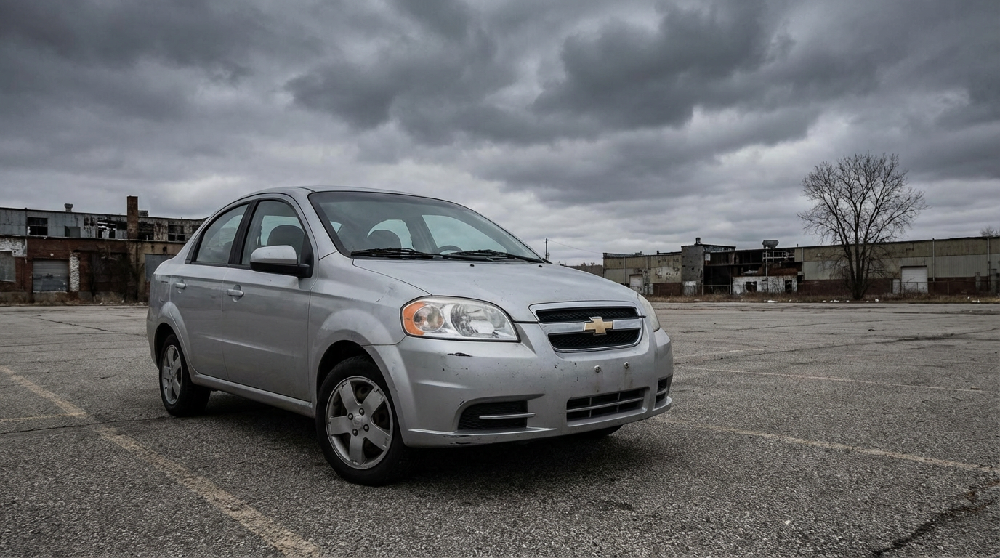
GM Bought a Bankrupt Korean Automaker and Sold You Its Deadliest Car for $9,995
89% crash lethality — second worst in FARS. The Chevrolet Aveo was a Daewoo Kalos with a bowtie, sold as America’s cheapest car.
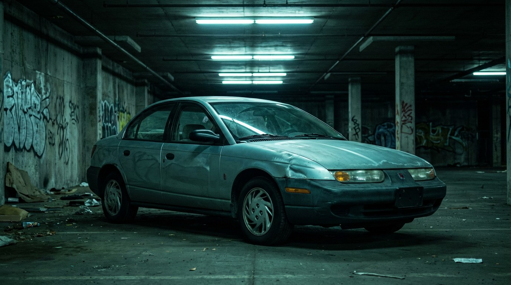
Saturn’s Dent-Proof Panels Couldn’t Stop It From Being the Deadliest Car Per Crash in America
92.4% lethality rate — worst in the FARS database. The polymer body panels that survived shopping carts couldn’t save anyone at highway speed.
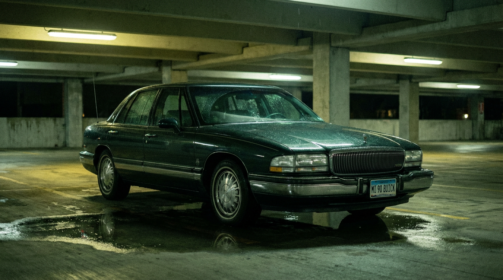
The Car With America’s Drunkest Drivers Is a Buick
The Buick Park Avenue leads every vehicle in the FARS database for impaired-driver fatal crashes at 31.7%. It beats the Corvette, the Mustang, and the Camaro.
Nissan Called the Maxima a “4-Door Sports Car.” The Fatality Data Agrees.
At 5.11 deaths per 100M VMT, the Maxima is deadlier than the Camaro, the Corvette, and the Challenger. Nissan’s marketing was more accurate than they intended.
The F-150 Was Involved in 20,066 Fatal Crashes. In 10,872 of Them, Someone Else Died.
When pickups crash, more than half the fatalities are outside the truck. The Ram’s 5,703 external kills would rank between drowning and fire as a cause of death. Nobody tracks this metric.
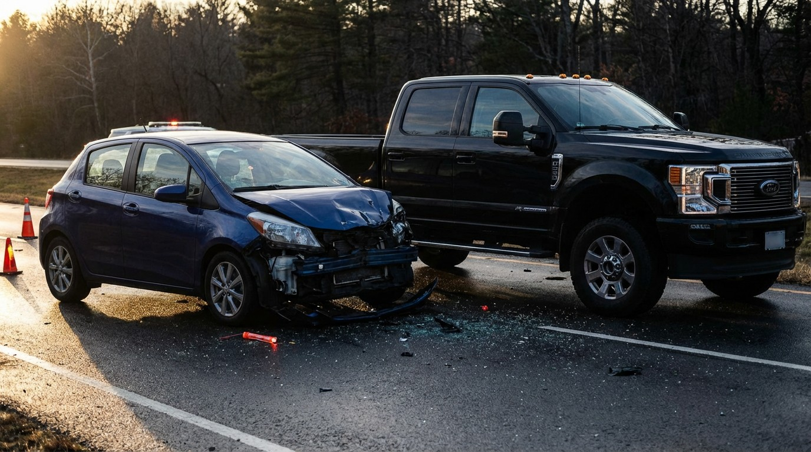
86% of Cavalier Crashes Are Fatal. For a Ram 2500, It’s 21%.
Death rates tell you how often a vehicle crashes. Lethality ratios tell you what happens next. In 337 models of FARS data, the survivability gap is 4 to 1 — and it tracks perfectly with weight.
Mississippi Kills Drivers at 5× the Rate of Massachusetts. They Drive the Same Cars.
24.9 deaths per 100K vs. 4.9. Same Camrys, same F-150s. The gap isn’t the vehicles — it’s the roads, the speeds, and the distance to a trauma center.
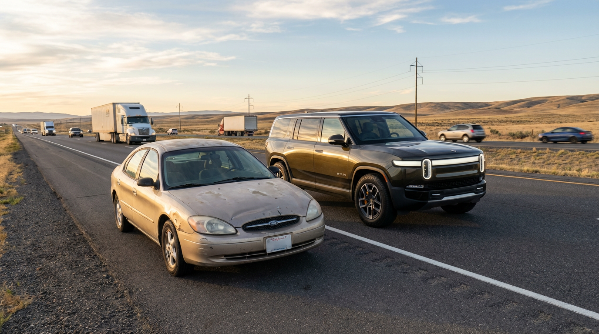
Congress Saved 9,000 Lives a Year in 2007. The Cars Didn’t Get the Memo Until 2024.
The ESC mandate passed in 2007. Full fleet penetration took 17 years. In the gap: roughly 40,000 people died in vehicles that would have had stability control if the fleet turned over faster.
A Porsche 911 Driver Drinks as Much as a Cobalt Driver. One Is 7× More Likely to Survive.
Impairment rates are nearly identical across price points — 22.8% vs 22.4%. Death rates differ by up to 26.5×. Safety in America is a luxury good, and the data proves it.

80% of Fatal Crash Drivers Were Sober. America Spent $800 Million on the Other 20%.
490,736 drivers in fatal crashes. 80% had zero impairment. NHTSA spends $800M/year chasing the minority. The Toyota Solara’s 4.1% impairment rate is the lowest in FARS. Its death rate is 3× the Camry’s.
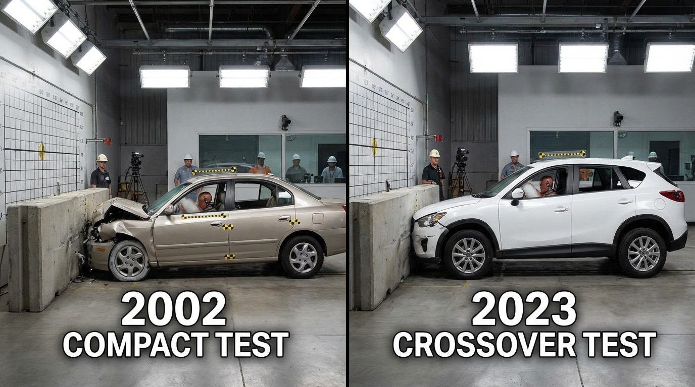
Seven Vehicles That Got 8–22× Safer in a Single Generation
The Tracker killed at 7.83. Its Equinox replacement does 0.36. That’s a 22-fold improvement. Seven vehicles, seven engineering events, and the three changes that explain all of them.

Sedans Kill at 2.5× the Rate of SUVs. Every Single Brand.
89,127 sedan deaths vs 46,442 SUV deaths. Across every major automaker, the sedan is deadlier per mile than the SUV. The gaps range from 2× to 25×. No exceptions.
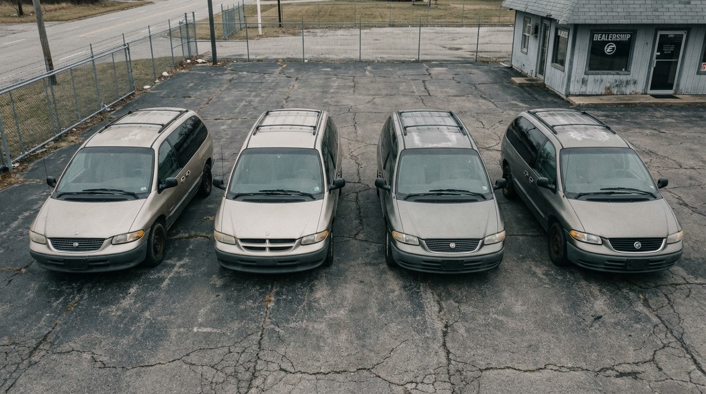
GM Built One Minivan and Sold It Four Times. All Four Were Deadly.
715 deaths across the Venture, Montana, Uplander, and Silhouette — four badges on one bad platform. The Sienna was 3.6× safer per mile. GM’s exit from minivans was a retreat, not a pivot.
Half the People Dying on American Roads Are Dying in Cars That Don’t Exist Anymore
46.7% of all FARS fatalities came from vehicles built before 2006. Nine discontinued models have 100% of their deaths from the ghost fleet. 87,320 people killed in cars no manufacturer will defend.
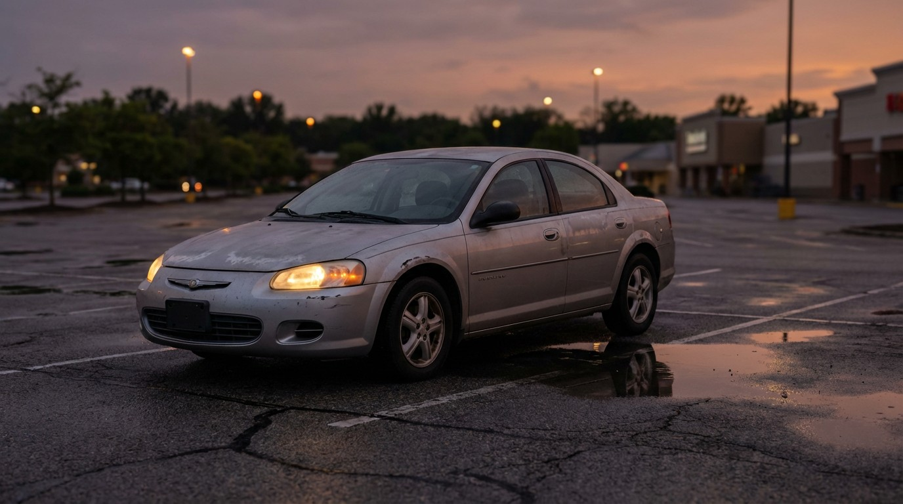
The Chrysler Sebring Had the Lowest Impairment Rate in Its Class. It Killed 664 People Anyway.
17.6% impairment — lowest of any midsize sedan in FARS. Yet at 1.65 deaths per 100M VMT, sober people were dying in a car that folded on impact. Then Chrysler fixed it, got worse drivers, and the death rate dropped anyway.
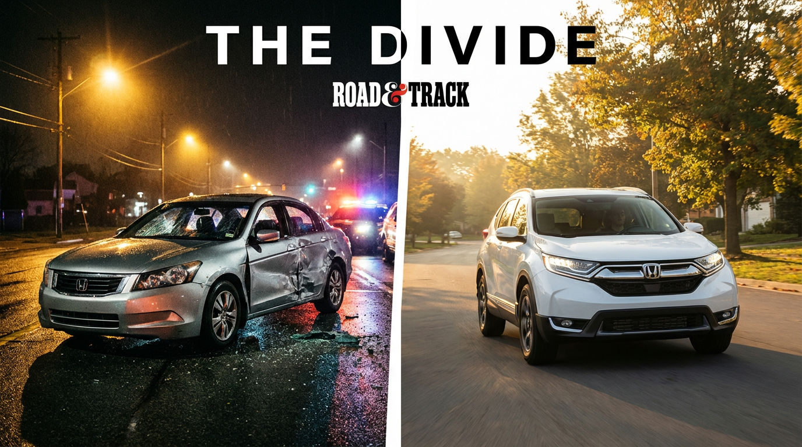
Honda’s Sedans Are Deadly. Honda’s SUVs Are Among the Safest Cars in America.
The Accord kills at 3.07 per 100M VMT. The Pilot kills at 0.29. Same brand, same dealership, 10.6× safety gap. Honda’s two best-selling sedans have killed 13,655 people.
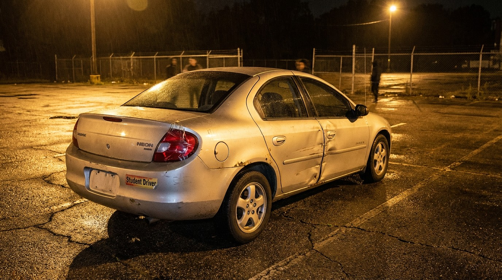
The Dodge Neon Was America’s Disposable First Car. It Killed 602 People.
23.2% impairment including 11.8% drug-positive — nearly double the national average. Model year 2005 alone: 159 deaths. The car nobody chose on purpose became a toxicology case study.
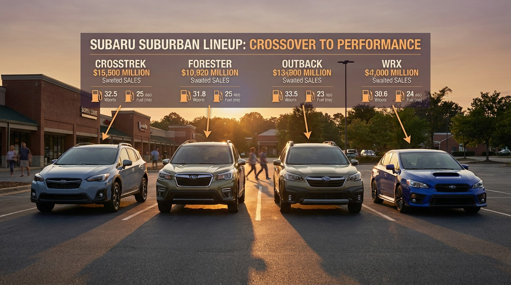
Every Subaru Is Safer Than Its Competitors. Every Single One.
Crosstrek at 0.08 is 12× safer than the Ford Escape. WRX at 0.29 is 21× safer than the Mustang — despite higher impairment. Seven models, seven class wins. The brand nobody recommends for safety is the safest brand in the database.
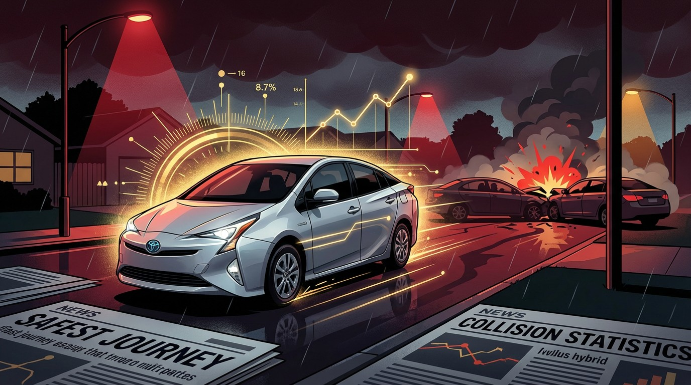
The Toyota Prius Is the Safest Sedan in America. Its Drivers Are the Soberest, Too.
The Prius kills at 0.55 per 100M VMT — 3.4× safer than the Corolla, 5.6× safer than the Accord. 16% impairment rate — lowest of any major sedan. The car everyone mocks is the one that’s least likely to kill you.
The Dodge Challenger Is the Safest Muscle Car in America. Nobody Believes It.
The Challenger kills at 1.00 per 100M VMT — 6× safer than the Mustang, 3.4× safer than the Camaro. Same impairment rates across the segment. It’s the heaviest, the oldest-skewing, and the one nobody thought to check.
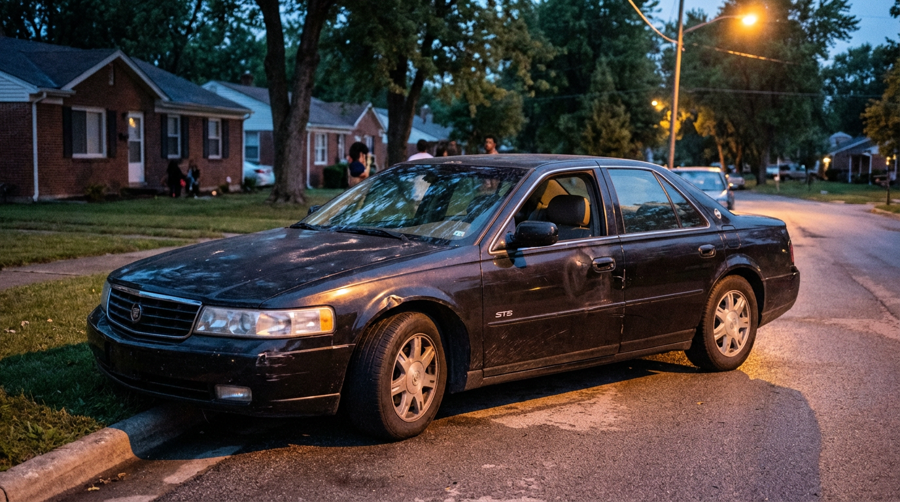
The Cadillac Seville Had the Lowest Impairment Rate in the Database. It Killed 391 People Anyway.
Cadillac’s premium sedan has the highest death rate of any luxury car in FARS — 3.89 per 100M VMT. Its drivers were the soberest in the database at 10.5% impairment. The DeVille, one rung down the ladder, is 10× safer.
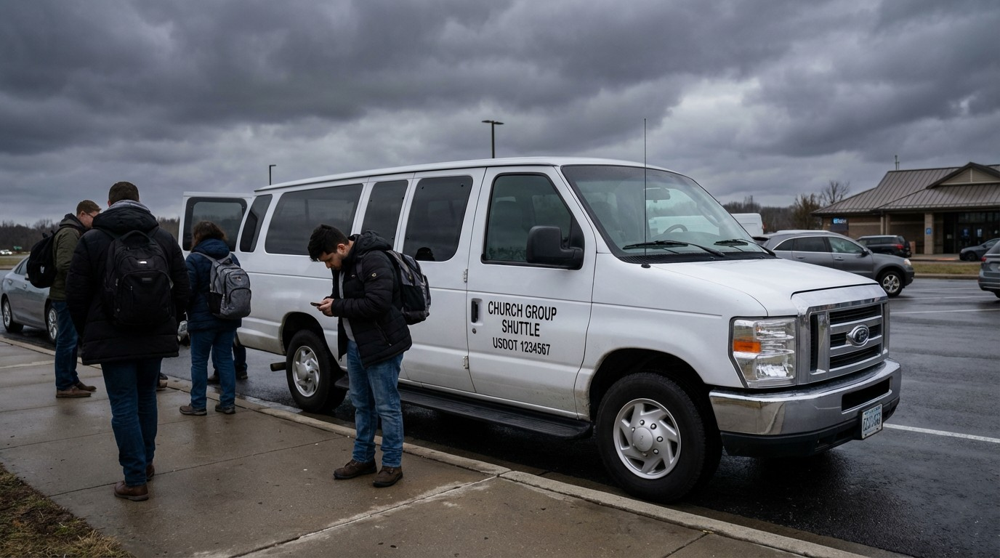
The Ford E-350 Killed 776 People. Most Were Passengers.
America’s default church bus, airport shuttle, and hotel van has the highest death rate of any commercial vehicle — 2.51 per 100M VMT. Its replacement, the Transit, kills at 0.14. An 18-fold safety gap Ford took 54 years to close.
America’s Cheapest Cars Are a Death Lottery. The Odds Depend on the Badge.
The Chevy Sonic kills at 1.40 per 100M VMT. The Mitsubishi Mirage manages 0.40. A 3.5× safety gap in the segment where buyers can least afford to get it wrong — and GM’s sober Spark drivers are dying at higher rates than Hyundai’s drunk Accent drivers.
The Toyota 4Runner Is 5× Deadlier Than the RAV4. Guess Which One Toyota Calls “Rugged.”
1,418 deaths and a 1.00 rate per 100M VMT make the 4Runner Toyota’s most dangerous SUV — 5× deadlier per mile than the RAV4, 2.4× the Highlander. Same company, similar buyers, radically different body counts.

The Chevy Silverado Is the Deadliest Vehicle in America. The F-150 Is Catching Up.
9,591 deaths — more than any other vehicle in FARS. Add the Sierra badge twin and GM’s full-size truck platform has killed 12,928 people. The F-150 is 20% safer per mile. The Ram is 37% safer.

The Volkswagen Jetta Promised German Engineering. It Delivered 1,375 Deaths.
VW’s own Golf on the same platform scores 0.18 deaths per 100M VMT. The Jetta? 1.71. That’s 9.5× deadlier — same company, same architecture, radically different outcomes.

Minivan Drivers Are the Soberest People on the Road. And It’s Not Even Close.
Minivans average 15.4% impairment in fatal crashes vs. 20% nationally. Sports cars hit 22.5%. The Grand Caravan and Odyssey clock in at 15.3% and 15.4%. The car you drive is a behavioral confession.
GM Sold the Same Deadly SUV Twice. The Yukon and Tahoe Have Killed 3,706 People.
Same platform, same factory, same death rate. The Yukon (2.55) and Tahoe (2.49) are mechanically identical — and 3× deadlier per mile than the Toyota Sequoia. Add the Suburban and it's 4,299 deaths from one architecture.
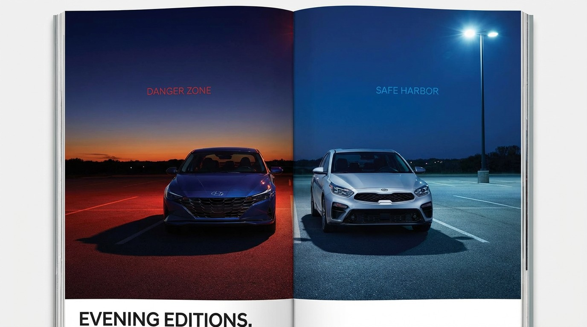
Hyundai and Kia Build the Same Car. The Hyundai Kills 3.8× More People.
Same platform, same engines, same parent company. The Elantra kills at 1.50 per 100M VMT — the Forte at 0.40. The Sonata-Optima gap is 2.7×. Korean twins, wildly different body counts.

The Ford Fusion Was the Safest Midsize Sedan in America. Ford Killed It Anyway.
At 1.23 deaths per 100M VMT, the Fusion was 40% safer than the Camry and 60% safer than the Accord. Same impairment rates across the segment. Ford discontinued it in 2020.
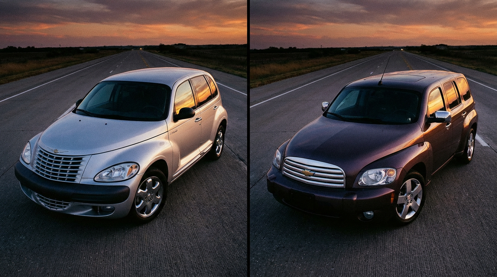
One Designer Made the Same Deadly Car Twice. For Two Different Companies.
Bryan Nesbitt designed the PT Cruiser at Chrysler, then the HHR at GM. Same retro concept, 1,187 combined deaths. The HHR kills at 2.12 per 100M VMT — 63% deadlier per mile.

Nissan Sold the Same Truck for 16 Years. It Killed 1,030 People.
The Frontier went virtually unchanged from 2004 to 2021 while competitors redesigned around it. Rate: 1.45 per 100M VMT — 1.8× the Tacoma, 5.2× the Colorado.

The Ford Escape Is 5× Deadlier Than a RAV4. They Cost the Same.
The compact SUV segment hides a 5× safety gap: the Escape kills at 0.95 per 100M VMT while the RAV4 manages 0.19. Same price, same cross-shopping — wildly different odds.

Infiniti Built Three Generations of the Same Car. The Impairment Rate Never Changed.
The G35, G37, and Q50 span 20 years and 698 deaths. Across all three, ~24% of fatal-crash drivers were impaired — 4 points above the national average, every single generation.

The Chrysler 300 Kills 2.5× More People Than the Dodge Charger. They’re the Same Car.
Same LX platform, same factory, same engines. The “respectable” sedan kills at 1.87 per 100M VMT — the muscle car at 0.75.

Toyota Built a Camry Coupe. It’s 2× Deadlier Than the Camry.
The Solara shares its platform, engine, and factory with the Camry. It kills at 4.25 per 100M VMT — more than double the Camry’s 2.03. Only 4.1% impairment. Sober people dying in a Toyota.

Pontiac Died in 2010. It Has Killed 3,038 People Since.
GM killed the brand, but 2.45 million Pontiacs still haunt American roads — Grand Prix (970 deaths), G6 (908), Grand Am (713). Every single FARS death came from a ghost.

The Dodge Dakota Was 3× Deadlier Than a Tacoma. Dodge Just Killed It.
At 2.62 deaths per 100M VMT from a 350K fleet, the Dakota was the second-deadliest mid-size pickup — and Dodge’s answer was to discontinue it entirely.

The Toyota Corolla Has Killed 4,945 People. It’s Still the Safest Car on This List.
The world’s best-selling car is the 4th deadliest sedan in FARS — not because it’s dangerous, but because 2.3 million of them drive 26.7 billion miles a year.
The Chevy Tracker Was a Suzuki in Disguise. It Killed 856 People.
At 7.83 deaths per 100M VMT, the rebadged Suzuki Vitara was 41× deadlier per mile than the RAV4 it competed against — and GM put a bowtie on it.

The Chevy S-10 Was 6× Deadlier Than a Tacoma. Then GM Fixed It.
At 4.83 deaths per 100M VMT, the S-10 was the deadliest compact pickup by a grotesque margin — then the Colorado replacement dropped it to 0.28.

The Ford Crown Victoria Killed 881 People. Most of Them Were on the Clock.
America’s most trusted fleet vehicle — chosen by police, taxis, and government agencies — had a fuel tank that turned rear-end crashes into cremations.

The Ford Expedition: America’s Most Trusted Family Coffin

The Chevy Cavalier Killed 1,225 People. Then GM Made Its Replacement Worse.

Grandma’s Buick LeSabre Has a Higher Death Rate Than the Toyota Camry
1,344 dead at 2.67 per 100M VMT — 32% deadlier than the Camry, with 23.5% impairment. The retirement sedan was secretly lethal.

The Jeep Wrangler Is America’s Favorite Way to Die Outdoors
At 0.84 deaths per 100M VMT, the Wrangler is the safest Jeep per mile. It still killed 1,842 people. Only 19.3% were impaired. The lifestyle vehicle paradox.

GM Built the Same Deadly SUV Twice. The Trailblazer Killed 2,473 People.
The Trailblazer's 2.83 fatality rate is nearly 2× the Explorer. Its twin, the GMC Envoy, adds 988 more deaths. One platform, two badges, 3,461 dead.

The Chevy Malibu Has Killed 3,465 People. Nobody Noticed.
The Malibu matches the Camry’s fatality rate at 2.03 deaths per 100M VMT, but generates zero headlines. The Ford Fusion is 40% safer per mile. GM’s most forgettable sedan is also its most quietly lethal.

The Chevy Tahoe Weighs 5,600 Pounds. It Didn't Help.
At 2.49 deaths per 100M VMT, the Tahoe is deadlier per mile than a Honda Civic — despite weighing nearly twice as much. The Silverado shares its platform and kills at half the rate. Size isn't safety.
Mercury Died in 2011. The Grand Marquis Is Still Killing People.
Three Ford Panther platform cars, same bones, wildly different fates. The Grand Marquis kills at 2.29 per 100M VMT — 2.7× deadlier than the Town Car (0.86). Same frame, same engine. The difference is who bought them.

The Jeep Cherokee Is 3.4× Deadlier Than the Grand Cherokee. The Name Is a Trap.
2,276 deaths at 1.73 per 100M VMT from a 1.05M fleet — while the Grand Cherokee’s 1.84M fleet manages just 0.51. Same brand, same name, 3.4× the death rate. Cherokee drivers are more sober too.

The Ford Ranger Is Nearly 3× Deadlier Than the F-150. Small Trucks Are a Lie.
3,089 deaths at 2.91 per 100M VMT. Every compact truck in FARS is deadlier per mile than its full-size counterpart — S-10 at 4.83 vs Silverado at 1.25, Dakota at 2.62 vs Ram at 0.78. Smaller doesn’t mean safer.

The Nissan Sentra Is the Cheapest Way to Die in a Sedan
2,571 deaths at 2.13 per 100M VMT — deadlier than the Corolla, Elantra, and Cruze. The Sentra is 3.4× more lethal per mile than the Cruze, and its own sibling Versa is somehow half as deadly.

The BMW 3 Series Is the Deadliest Luxury Car in America. By a Lot.
At 2.73 deaths per 100M VMT, the “Ultimate Driving Machine” is 8.5× deadlier than the Audi A4. Its 1,237 fatalities dwarf every luxury competitor, and 22.1% of its drivers in fatal crashes were impaired.

The Dodge Grand Caravan Killed 1,782 People. Almost None of Them Were Drunk.
America’s default family hauler has the lowest impairment rate in FARS at 15.3%. Its 1,782 deaths are overwhelmingly sober parents on routine trips.

The Ford Taurus Was America’s Best-Selling Car. Then It Became a Ghost.
Once the best-selling car in the country, the Taurus ended its life as a fleet-only rental sedan. Its 2.74 per-mile death rate is more than double the Fusion that replaced it.

The Honda Civic Has Killed 6,553 People. It’s Still Everyone’s First Recommendation.
The safest car in the world can still be one of the deadliest — if enough people drive it. The Civic’s 2.25 per-mile rate beats every compact rival.

The Toyota Camry Is the ‘Safest’ Car in America. It Has Killed 6,328 People.
Below-average fatality rate, 5th highest body count. The paradox of safe cars that kill thousands through sheer ubiquity.

‘Altima Energy’ Is Real. 4,787 People Are Dead.
The internet meme about reckless Altima drivers is backed by hard FARS data — 7th deadliest vehicle in America with a 2.88 fatality rate. But the impairment rate is surprisingly average.

The Dodge Charger Is America’s Favorite Bar Car. The Toxicology Reports Prove It.
Of 4,339 Charger drivers in fatal crashes, 985 were impaired — a 22.7% rate. It’s a “sedan” with a Hemi V8 and a customer base that skews thirsty.

The Ford Focus Was America’s Most Popular First Car. It Killed 3,046 People.
At 2.52 per 100M VMT, the Focus was deadlier per mile than every compact competitor — Civic, Corolla, Elantra. And 80% of fatal crashes were sober.

The Chevy Cobalt Was a Death Trap Before GM Even Admitted It
At 5.10 deaths per 100M VMT, the Cobalt is the deadliest compact sedan in the database. Its replacement, the Cruze, is 8× safer. The ignition switch scandal was just the beginning.

The Camaro Is the Second-Deadliest Sports Car in America. It’s Not Even Close to First.
At 3.44 deaths per 100M VMT, the Camaro kills at half the Mustang’s rate — but with a higher impairment percentage. 1,204 dead in a decade.

Nissan’s “Luxury” Sedan Is Twice as Deadly as the Altima
At 5.11 deaths per 100M VMT, the Maxima is nearly 2× deadlier than the Altima — and it’s not even a sports car.

Pickup Trucks Account for 1 in 5 Traffic Deaths in America
41,593 pickup fatalities over a decade. The Silverado alone tops the entire database at 9,591. But per mile, they’re safer than sedans.

The Chevrolet Impala: America’s Deadliest Rental Car
At 5.0 deaths per 100M VMT and 3,774 fatalities, the fleet-favorite Impala is 2.5× deadlier than its own sibling, the Malibu.

The Ford Mustang Has the Highest Death Rate of Any Mass-Market Car in America
At 6.02 deaths per 100M VMT and 2,739 fatalities, the Mustang is the deadliest mainstream vehicle on American roads.

The Hyundai Veloster Is the Deadliest Car in America Per Mile Driven
At 8.54 deaths per 100M VMT, this economy coupe out-kills the Mustang, Camaro, and Corvette — and its drivers are comparatively sober.

The Tesla Paradox: Silicon Valley’s Safety Darling Meets the Muscle Car’s Worst Habit
Model Y posts 0.03 deaths per 100M VMT. Model S posts a 24% impairment rate. Same brand, different species.

How the Ford Explorer Escaped Its Own Legacy
503 fatal crash involvements for the 2002 model year. 8 for the 2022. A 98.4% reduction.

One In Four Corvette Drivers In Fatal Crashes Is Impaired
26.2% tested positive for alcohol or drugs — the highest of any major sports car. The Buick Park Avenue hits 31.7%.

The 261x Death Gap: How Your SUV Choice Is a Life-or-Death Decision
The fatality rate gap between the Chevrolet Tracker and the Porsche Macan is 261-fold.

The Honda Accord Has Killed More People Than the Mustang, Camaro, Corvette, and Challenger Combined
7,102 Accord deaths vs. 4,648 for all four muscle cars. Ubiquity is its own kind of danger.

The Chevy Astro Van: Where 27% of Drivers in Fatal Crashes Were Loaded
A minivan out-drinks the Mustang. Impairment correlates with vehicle price, not vehicle type.

The Toyota Land Cruiser Paradox: Sober Drivers, Maximum Death
3rd-lowest impairment rate. 3rd-highest death rate. The most unsettling data point in the database.
AI-generated editorial analysis of NHTSA FARS public data. See Methodology for caveats.
NHTSA FARS national data
The Fatality Analysis Reporting System (FARS) is a census of all fatal motor vehicle crashes in the United States, maintained by NHTSA. FARS covers all crashes nationally and can be normalized by vehicle miles traveled (VMT) — but only at the broad vehicle-class level (passenger cars, light trucks, motorcycles), not per make/model.
VMT data comes from the FHWA Highway Statistics Table VM-1, which estimates total miles driven annually by vehicle type. Dividing FARS fatalities by VMT yields the "fatality rate per 100 million VMT" — the standard metric used in NHTSA Traffic Safety Facts publications.
- 2024 data is an early estimate based on NHTSA's preliminary projections and is subject to revision.
- Fatalities by road user type (2014–2023) are final FARS counts.
- Per-class VMT rates use FHWA VM-1 data matched to FARS occupant fatality counts for the corresponding vehicle type.
FARS per-model estimated rates
The FARS per-model section aggregates all occupant fatalities across 2014–2023 from NHTSA FARS bulk CSV downloads, grouped by make/model. This data includes:
- All occupant fatalities (drivers + passengers), not just driver deaths
- All model years on the road, not a single MY cohort
- All vehicles involved in fatal crashes, regardless of registration volume
Since per-model VMT data does not exist publicly, estimated fatality rates use a proxy method:
- Fleet estimate: publicly reported average annual US sales × fleet multiplier (12.5 yr average vehicle age × 0.70 survival discount ≈ 8.75 effective fleet years)
- Annual VMT estimate: estimated fleet × NHTS class-average annual miles (sedans: 11,500 mi; SUVs: 12,500 mi; pickups: 13,500 mi; vans: 11,800 mi; sports cars: 8,000 mi)
- Rate: 10-year total deaths ÷ (estimated annual VMT × 10 years ÷ 100,000,000)
Key caveats:
- Sales figures ≠ registrations — fleet size estimates are approximate
- All vehicles within a class are assumed to drive the same annual miles
- Does not account for driver demographics, geographic variation, or vehicle age distribution
- Includes models with 50+ deaths or significant annual sales (>1k) for rate comparison
Impaired driving analysis
Impairment data comes from the FARS PERSON.csv file, filtered to drivers only (PER_TYP = 1). Each driver record is joined to its vehicle record via ST_CASE and VEH_NO.
- Alcohol positive: DRINKING = 1 (police-reported) OR ALC_RES (BAC test result) between 1–94 (BAC > 0.00 g/dL)
- Drug positive: DRUGRES1/2/3 values 100–295 (specific drug detected in toxicology) OR DRUGS = 1 in older files
- Any impairment: alcohol positive OR drug positive
Key caveats:
- Toxicology testing rates vary significantly by state and jurisdiction — some states test nearly all fatally-involved drivers, others test far fewer
- Untested drivers are coded as unknown, not negative — actual impairment rates are likely higher than reported
- Only models with 100+ drivers in fatal crashes are shown to ensure statistical significance
Model year analysis
The MOD_YEAR field from FARS VEHICLE.csv identifies the model year of each vehicle involved in a fatal crash. Deaths are aggregated by (make, model, model year) across the 2014–2023 observation period.
- Older model years have more cumulative years of exposure on the road during the observation period, creating a natural age-related skew
- This chart reflects fleet-age composition and crash involvement, not inherent safety differences between model years
- Model years with fewer than 5 deaths are excluded
- Invalid model year values (0, 9998, 9999, pre-1980, or future years) are excluded
Scope: fatalities only
This dashboard covers fatal crashes only from the FARS census. NHTSA also maintains the Crash Report Sampling System (CRSS), which covers all police-reported crashes (including injuries and property damage) — but CRSS is a probability-based sample, not a census, and is not incorporated here.
Limitations
- NHTSA/FARS data: VMT normalization is only available at the vehicle-class level, not per make/model. Class-level rates mask variation within each category.
- FHWA VMT estimates are modeled from traffic counts and may not perfectly reflect actual travel.
- FARS per-model: Estimated rates depend on sales-as-fleet-proxy assumption. Vehicles with much higher or lower than average usage will have distorted rates.
Sources
NHTSA FARS database → |
NHTSA Traffic Safety Facts →
FHWA Table VM-1 →
FARS bulk CSV downloads → |
NHTS (National Household Travel Survey) →
FARS/CRSS Coding and Validation Manual →